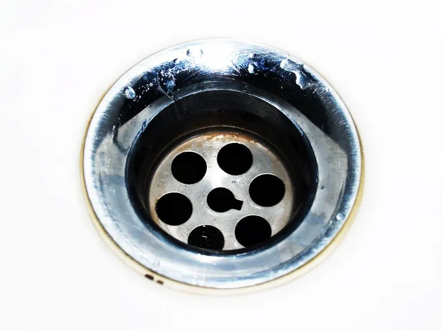

High Water Table & Coastal Rain Saturation
During Florida's rainy summer months, saturated soil increases ground moisture pressure around underground lateral pipes. If a sewer lateral has micro-cracks or loose joints, groundwater can seep into the line or prevent normal gravity outflow.
Our technicians evaluate exterior cleanouts and use camera inspections to ensure your drain line maintains proper pitch and seal integrity.
Schedule an evaluation →